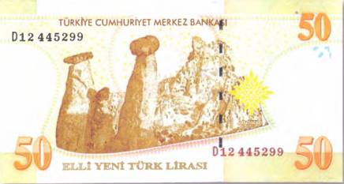
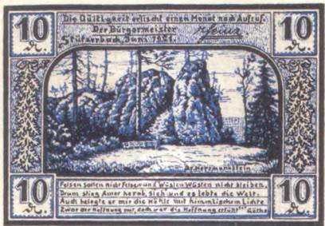
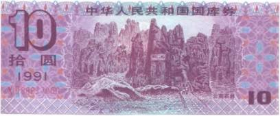
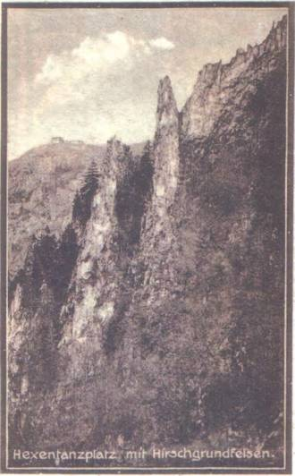
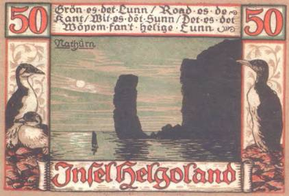
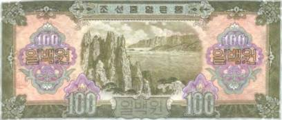
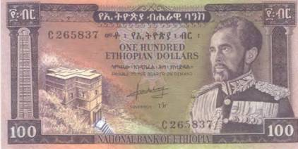

Тайны бумажных денег : Каменная сказка Гереме

Оборотная сторона банковского билета Турции в 50 новых лир украшена замечательным видом удивительных и неповторимых по своим формам скал в Национальном парке Гереме — одном из туристических магнитов страны (рис. 146).
Он расположен на высокогорной равнине в самом центре Анатолии, в области Каппадокия. Во времена Византийской империи это место называлось Матиана. А свое современное название (с начала 80-х гг. XX в.) Национальный парк получил от находящегося в непосредственной близости одноименного комплекса христианских пещерных церквей, вырубленных в скалах в незапамятные времена.

Гереме — это земное чудо, рожденное в муках природных катастроф: от чудовищных извержений вулканов до стремительных, сметающих все на своем пути селевых потоков и кошмарных наводнений. Последствиями таких стихийных бедствий ученые и объясняют возникновение Гереме. Оседавший на землю вулканический пепел затвердевал, постепенно превращаясь в различные по плотности слои туфа, а срывавшиеся с гор водные потоки размывали его, формируя из этого податливого природного материала причудливые скалы и глубокие каньоны.
Изображения интересных горных формаций встречаются и на бонах других стран (рис. 147–151).

Впечатление от увиденного в Тереме настолько сильное, что, однажды побывав там, человек уже никогда не сможет его забыть. И еще долго после посещения парка ему будут сниться подкрашенные фиолетовым, желтым и светло-коричневым цветами огромные каменные грибы на фоне далеких заснеженных пиков, а его ноздри вздрагивать от обманчивого прикосновения чистейшего, пропитанного необыкновенными ароматами воздуха.

Вот как описывал свое первое впечатление от встречи с Тереме в середине прошлого века один немецкий путешественник: «Белый как мел песок на ощупь словно мелкая соль. Поверху толстые слои светло-желтой глины. А между ними — мерцающий серебром гнейс. В маленьких, защищенных от ветра мульдах (углублениях. — Р. М.) земля сочного коричнево-красного цвета. Рваные каньоны, извиваясь, словно гигантские змеи, пересекают поперек высокогорную равнину. В обремененных жарой долинах, своей формой напоминающих котлы, выстроились в колонны стрелы, трезубцы и пирамиды из блекло-желтой и белой земли. Темно-коричневые, с большими бледными пятнами и в черных шляпах, они похожи на сотни колоссальных фаллосов. Серые и коричневые, красные, а когда и фиолетовые, но чаще просто темные, расколотые эрозией и при всей запутанности в странном порядке расставленные камни. Необозримая каменная пустыня, будто созданная поколениями камнетесов, скульпторов и архитекторов. Драконы и сказочные звери из туфа. Каменные леса из одних только огромных грибов. Верблюжьи стада в желто-пепельной неподвижности. Каменные глаза, рассматривающие тебя испепеляющими взглядами. Скальные монастыри, купольные мечети и каменные арабески под стать сюрреалистическим снам. Церковные органы из камня. Фантастический мир вызывающей действительности в мгновение рывка. И все это внезапно и бесповоротно превратилось в камень».

Нетипичный для большей части Каппадокии «лунный ландшафт» Гереме далеко не единственная его достопримечательность. Многие из описанных выше каменных грибов, трезубцев, пирамид и так называемых каминов фей (англ. — fairy chimney, тур. — peri bacalan) хранят удивительные тайны! Дело в том, что они буквально напичканы потайными комнатами и ходами, самые древние из которых были прорыты человеком тысячи лет назад. Под ногами у ошеломленных от неземной красоты туристов протянулись многокилометровые туннели, имеются артезианские колодцы и резервуары для хранения воды. А в отвесных и на первый взгляд непреступных скалах разместились искусственные пещеры в несколько этажей (и до десяти подземных уровней), немалая часть которых и по сей день заменяет людям жилье.

Когда в Гереме стали жить первые люди, точно неизвестно. Полномасштабные исследования этих исторических памятников пока не проводились. Но можно смело утверждать, что в эпоху бронзы некоторые подземелья и гроты уже были заселены. Так, еще в IV в. до н. э. античный писатель Ксенофон в своем труде «Анабазис» упоминал вырубленные в скалах Гереме пещеры. По подсчетам ученых в определенные исторические периоды в подземных городах Турции могли проживать до ста тысяч жителей. Что же заставляло людей «ложиться на дно», лишая себя элементарных удобств и радости наслаждения солнечным светом?

Наиболее жизнеспособной кажется версия, что первые жители искали в Гереме спасения от иноземных захватчиков. В первые века до Рождества Христова ими могли быть персы. Однако уже в начале нашей эры в подземельях и пещерах Гереме появились новые поселенцы. Ими были гонимые за веру монахи-отшельники и целые христианские общины. Доказательством тому служат многочисленные христианские церкви, так же как и человеческие жилища, вырубленные в скалах. Своды этих храмов украшены великолепными фресками религиозного содержания. Притом некоторые из них по изобразительному стилю можно смело считать единственными в своем роде. Конечно, христианские церкви Гереме и соседних с ним регионов сильно отличаются от подобных сакральных сооружений в других частях света. Например, от каменных церквей Лалибелы в Эфиопии, целиком и полностью высеченных в толще твердых горных пород, о которых подробнее говорилось в книге «Банкноты мира. Скрытые знаки бумажных денег». Изображение самой известной из них — церкви Святого Георгия, выполненной в форме креста (полностью обозреть ее можно только сверху), украсило эфиопскую купюру в 100 долларов 1966 г. (рис. 152).

Во-первых, только немногие из церквей и монастырей Гереме можно принять за таковые, рассматривая их снаружи. Зачастую входы в них больше напоминают оплывшие от времени проломы в древней стене. И лишь изредка можно увидеть сохранившиеся фрагменты со вкусом сработанных порталов. Во-вторых, обитателям подземных городов Гереме «строительство» жилых помещений и храмов не стоило большого труда. Податливый туф легко обрабатывался, и на создание очередного архитектурного шедевра отшельникам требовалось сравнительно мало времени.
Археологи успели выяснить, что, помимо сакральных и жилых помещений, в подземных городах Турции имелись склады и мастерские, хлева и даже морги, в которых трупы дожидались захоронения. В жаркие дневные часы, когда температура воздуха в тени достигала отметки в 40 °C, в глубоких пещерах и туннелях сохранялась приятная прохлада. Зимой же, когда снаружи нередко выпадал снег, легко одетые жители подземных городов коротали время у зажженных очагов.
Далеко еще не все пещеры и монастыри Гереме изучены. А многие даже пока не найдены. Отдельным местным счастливчикам это позволяет и сегодня неплохо жить от подпольной торговли случайными находками. Так было всегда и так будет, наверное, еще очень долго.
Гереме хранит еще множество тайн. Но когда на его холмы и долины опускается звездная ночь и в холодном свете луны тени от скал начинают двигаться и принимать причудливые очертания, скорее осознаешь, нежели понимаешь, что совсем не нужно, чтобы все тайны этого удивительного мира стали нам ведомы. Куда важнее, чтобы своим загадочным великолепием Гереме продолжал радовать нас, а после и наших потомков.